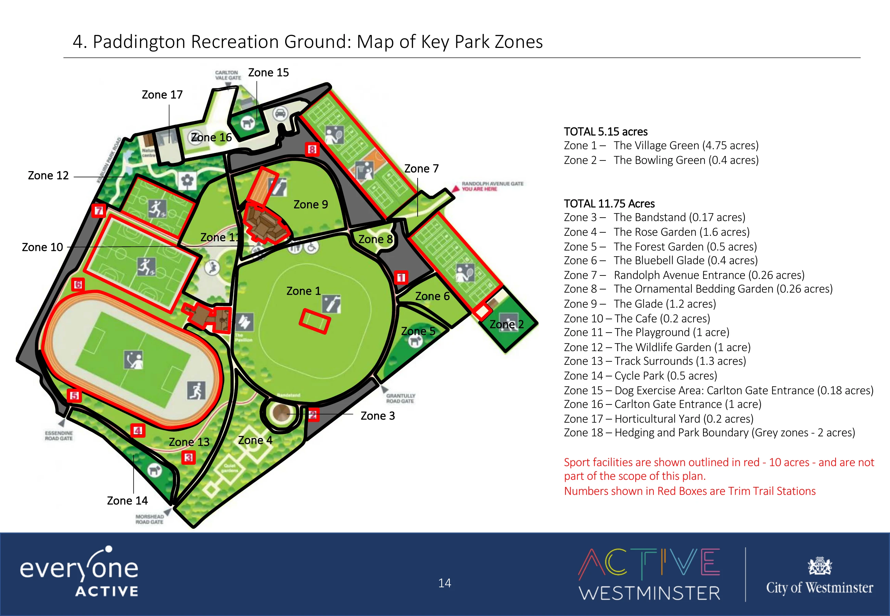

Connecting to the game...
Zoom in to read the labels, then swipe or scroll around the map. Zone numbers are park labels; red boxes mark trim-trail stations.

The map image could not load. Try reopening it, or use the council PDF linked below.
Map: City of Westminster / Everyone Active, 2020 management plan, page 14. Follow current park signs if anything has changed. View council PDF ↗